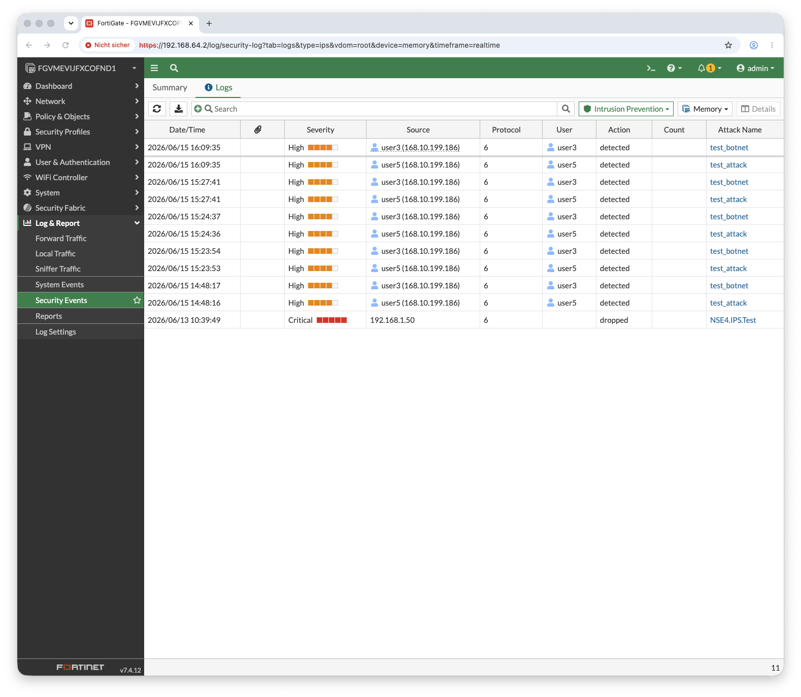

Warum eine Custom-Signatur
Auf einer unlizenzierten Lab-FortiGate ist die FortiGuard-IPS-Datenbank nur eingeschränkt aktuell — sich für eine Demo auf eine bestimmte echte Signatur zu verlassen, ist eine Lotterie. Eine eigene Signatur ist deterministisch: sie feuert garantiert auf ein selbst definiertes Muster. Und „Custom IPS Signatures" sind ohnehin NSE4-Stoff.
Aufbau: Der Client hängt hinter der FortiGate (LAN-Segment via QEMU Socket-Networking). Sein HTTP-Verkehr läuft durch die LAN→WAN-Policy — genau dort greift die flow-basierte IPS-Inspektion.
1 — Die eigene Signatur
Eine F-SBID-Signatur, die das Muster NSE4IPSTEST in client-seitigem HTTP-Verkehr matcht:
2 — Signatur in einen Sensor, Sensor an die Policy
Eval-Limit: Die kostenlose Lizenz deckelt die IPS-Sensor-Tabelle bei 10 —
voll mit Default-Sensoren. Ein neuer Sensor scheitert mit Return code -4 (reached the maximum number of entries).
Lösung: einen bestehenden Sensor wiederverwenden und einen Eintrag ergänzen.
3 — Der Test vom Client
Zwei Requests an dieselbe (Klartext-)HTTP-Seite — einmal sauber, einmal mit dem Muster in der URL:
Gleiche Ziel-URL, einziger Unterschied das Muster — die saubere Anfrage passiert, die „bösartige" wird verworfen. Da nur die IPS-Signatur das Muster inspiziert, ist der Block eindeutig ihr zuzuordnen.
4 — Der Beweis im IPS-Log
In Log & Report → Security Events → Intrusion Prevention (Memory-Log) erscheint die Erkennung:
| FELD | WERT |
|---|---|
| Attack Name | NSE4.IPS.Test |
| Severity | Critical |
| Source | 192.0.2.50 (Client) |
| Protocol | 6 (TCP / HTTP) |
| Action | dropped |
Logging-Detail: Auf einer disklosen FortiGate-VM landen Logs im RAM. Tauchte zunächst
kein IPS-Event auf, half set log enable am Sensor-Eintrag
plus config log memory filter / set severity information.
Der Block selbst funktioniert unabhängig davon — das Log ist die Sichtbarkeit.

Abb. 1 — FortiGate IPS Security Events Log: NSE4.IPS.Test / Severity Critical / Action dropped — Custom F-SBID Signatur greift zuverlässig
Beweis-Kette
Drei unabhängige Belege, dass die IPS greift:
Sauber = 200, Muster = Timeout/000. Reproduzierbar.
Der Client-Traffic läuft sichtbar durch die FortiGate (LAN→WAN).
NSE4.IPS.Test, dropped, Critical, src 192.0.2.50 — eindeutig.
Erkenntnisse (NSE4)
--pattern, --service, --flow definieren eine eigene Signatur — deterministisch testbar.
Im Sensor-Eintrag referenziert set rule die numerische Signatur-ID, nicht den Namen.
IPS und Application Control sind flow-based; aktiviert über utm-status in der Policy.
10 Sensoren, 3 Policies/Routen — Limits beim Design einplanen, vorhandene Objekte wiederverwenden.
Konfiguration auf GitHub: die Custom-Signatur, der Sensor-Eintrag und die Policy-Anbindung sind dokumentiert. → fortigate-vm-lab-apple-silicon